Part C：专题内容方块 — 经济系统
按周次聚合同一主题在不同周报中的原文、原图与 mkk 评语。
C6. 货币产销比追踪
追踪范围：W5 → W9, W22 | 当前状态：W22 蓝钻存量补充
W5 原文（2024.08.12-08.18）
金币产销比稳定在90％左右，人均每日获得3.2万（+1%），消耗3.1万（+5%）;
满愿星的产销比从100%增长到130%，人均每日获取48.6（-8%）个，消耗63.2（+6%）个
蓝钻的产销比从46％增长到64％，人均每日产出80（-37%），消耗249（-7%）
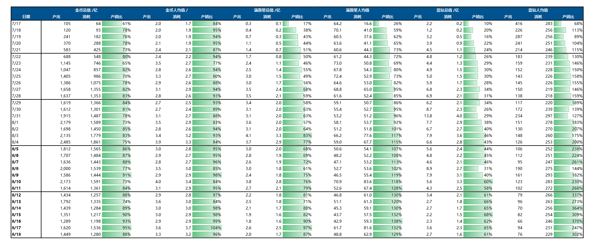
📎 原文：第五周周报
W6 原文（2024.08.19-08.25）
金币产销比稳定在90％左右，人均每日获得3.75万（+15%），消耗3.5万（+13%）;
满愿星的产销比仍保持130%不变，人均每日获取47.2个（-3%），消耗61.1个（-3%）；
蓝钻的产销比从64％下降到57％，人均每日产出103.3（+28%）（受满月礼邮件发放影响），消耗243.5（-2%）
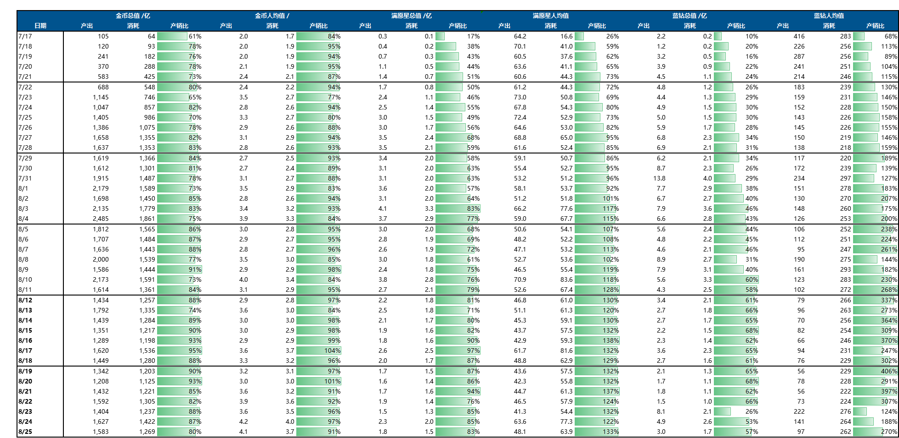
📎 原文：第六周周报
W7 原文（2024.08.26-09.01）
受活跃下降影响，各货币总体产出消耗下降2成以上；人均产销比则都有提升
金币产销比88％（+1%），人均产出3.7万（+1%），消耗3.6万（+4%）;
满愿星产销比139%（+8%），人均产出43个（-9%），消耗60个（-2%）；
蓝钻产销比331％（+48%），人均每日产出72（-30%，前周发了邮件奖励），消耗230（-6%）
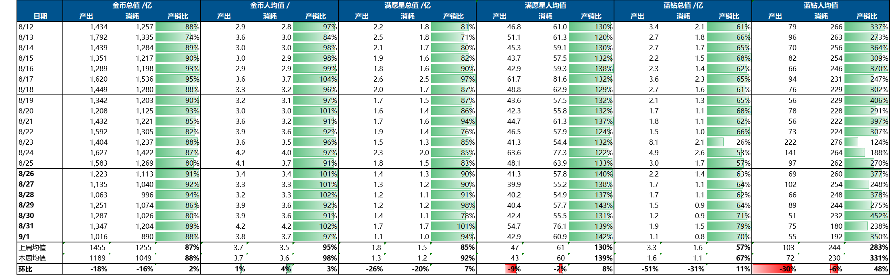
📎 原文：第七周周报
W9 原文（2024.09.09-09.15）
相较上周，金币与满愿星产出消耗较平稳，蓝钻整体产销下降近10%；人均产销比则都有提升
金币产销比101％（+4%），人均产出4.7万（+13%），消耗4.7万（+19%）;
满愿星产销比154%（+11%），人均产出46个（+12%），消耗71个（+22%）；
蓝钻产销比392％（-19%），人均每日产出46个（-7%），消耗166.9（-13%）
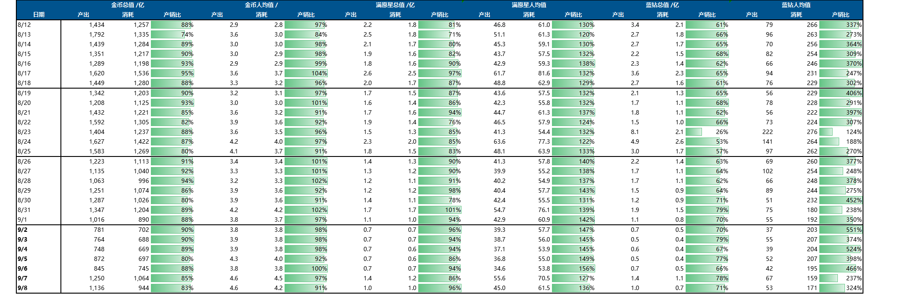
📎 原文：第九周周报
📌 mkk 评语
金币经济基本健康（产销比 88-100%），蓝钻持续贬值（57% → 392%，产出远超消耗），满愿星有囤积风险（130%）。蓝钻的问题后来被月光卡池（W20-W21）部分回应——用免费货币做消耗出口。W22 补充数据显示，月光卡池 + 小狗卡池双重消耗将蓝钻总量从 9.8 亿压缩至 5.4 亿(-45%)。
W22 原文（2024.12.09-12.15）— 蓝钻存量补充
蓝钻数据补充：参与卡池的一半玩家蓝钻得到消耗，另一半未参与卡池的玩家蓝钻未被消耗；活跃用户总量 9.8 亿 → 5.4 亿
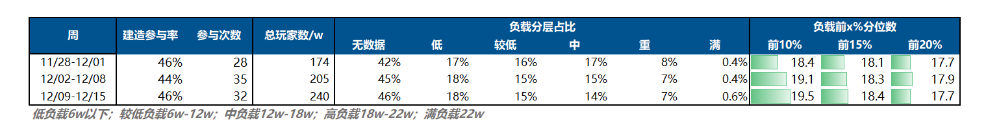

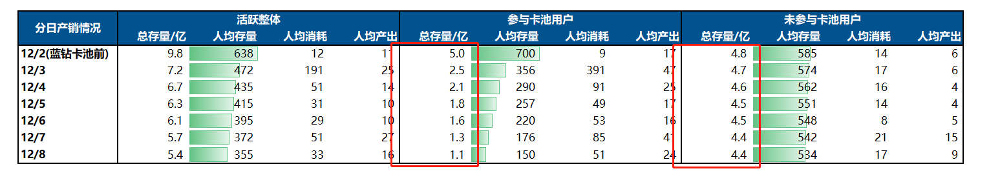
📎 原文：第二十二周周报
C7. 资产存量 & 专项货币分析
追踪范围：W6 → W85 | 当前状态：断续跟踪中
W6 原文（2024.08.19-08.25）
数据取自DB
选取历史金币总产量>10w的玩家数，分析其金币存量与在线时长关系。整体上平均在线时长呈下降状态
金币存量>50w的玩家的平均在线时长下降幅度较高（约-20%），10-50w的玩家在线时长下降幅度约14%，低于10w的玩家在线时长下降幅度较低（约-9%）
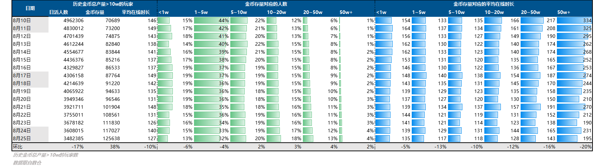
📎 原文：第六周周报
📌 mkk 评语
高资产玩家可能因"没什么可追求"而流失更快。金币 >50w 的重度囤积玩家在线时长降幅最大(-20%)，10-50w 玩家降幅约 14%，低存量玩家仅降 9%。经济系统的消耗出口不足会反噬活跃度。
C6 货币产销比
W32 潮流代币产销
潮流商店每日参与率 55%（参与包括买卖，分母为日活），每日参与人数 52w。产销情况良好，没有过多的存量。代币生产：约 77% 的潮流代币生产来自于售卖货物，20% 来源于BP任务。共约 120w 玩家参与了售卖潮流季物品，获得代币 448 亿（其中 63% 来自于新春食物，28% 来自于雪雕）。代币消耗：共 132w 玩家参与了潮流季购买物品，消费代币489亿（其中 47% 是新春限定，24% 是购买沙滩季返场物品，20% 购买服饰）。
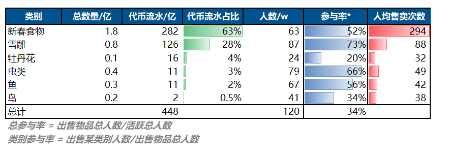
📎 原文：第三十二周周报
📌 mkk: 消耗(489亿)>生产(448亿)说明存量正在被消耗，产销健康。新春食物(63%)是代币生产的绝对主力，而消费端新春限定(47%)和沙滩季返场(24%)是主要出口——"用新春食物换沙滩季物品"构成了核心循环。生产端过度依赖单一品类是隐患，新春食物下架后代币来源可能断崖。
W38 蓝钻产销
3.20周卡和蓝钻卡池同步上线。3.20-4.06，月周卡、周礼包和直购蓝钻总流水 ¥730w；月卡占比 40%，周卡 18%，直购+周礼包 42%。本期绵绵假日蓝钻卡池参与率 60%，远高于吉祥娃娃（春节）和秘林探险蓝钻卡池。蓝钻的消耗/原存量比 136%，高于前两个卡池，表明本次蓝钻产销流通速度比之前更快。总消耗蓝钻 6.5 亿，人均消耗 467 个，低于之前的蓝钻卡池。同存量分层的玩家，本期卡池的人均消耗明显高于前两个卡池。本期蓝钻卡池人均消耗蓝钻数量少主要是因为没蓝钻或低蓝钻存量用户占比更高，其中有 47% 的玩家原存量不足 100 个。
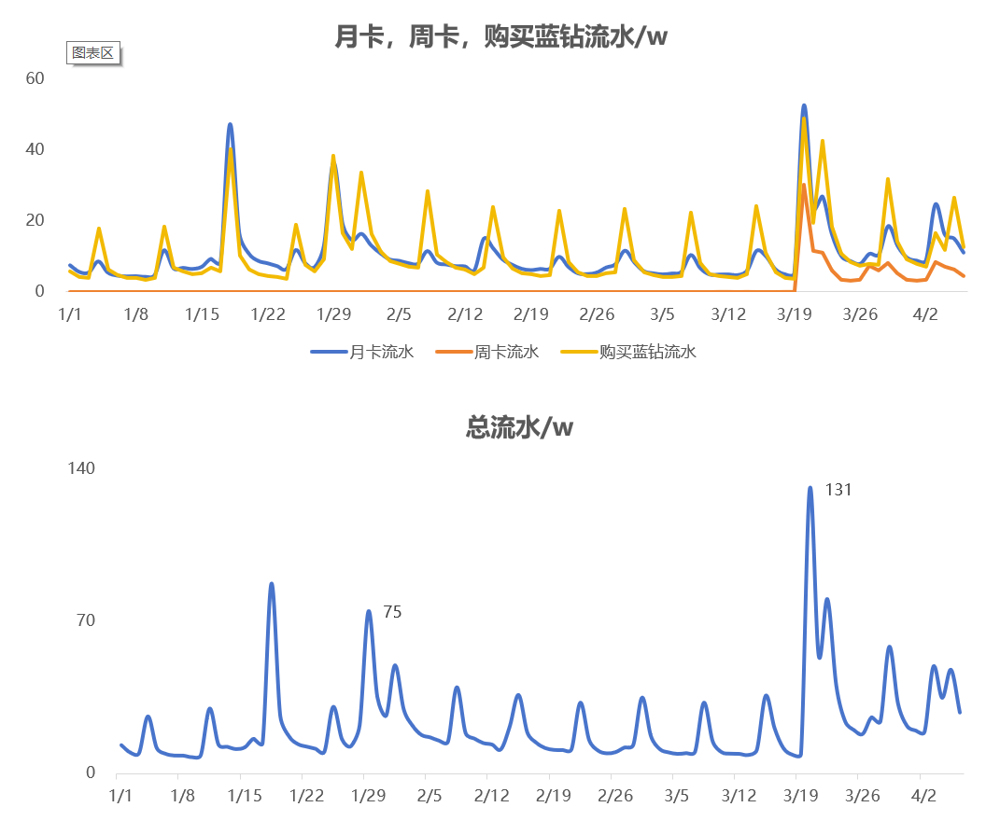
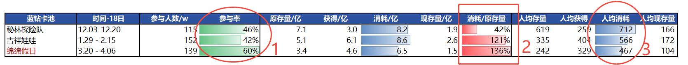
📎 原文：第三十八周周报
📌 mkk: 核心发现是"同存量消耗更高+整体存量更低"——周卡提供了低价蓝钻供给，加速了流通（136%消耗/存量比），但也意味着玩家蓝钻储备正在被快速消耗。47%玩家存量不足100个，如果后续蓝钻获取渠道不变，下一个蓝钻卡池的参与度可能受限于"没蓝钻可花"。周卡的引入短期刺激了消费，但长期可能压缩蓝钻的稀缺性。
W48 蓝钻产销分析
蓝钻产销：本期蓝钻卡池上线前，卡池玩家的蓝钻存量达到 4.5亿远高于往期，人均存量 469 个。直购蓝钻：本期直购蓝钻流水不高，仅 189w
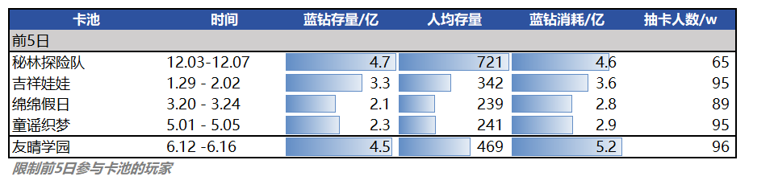
📎 原文：第四十八周周报
📌 mkk: 蓝钻存量4.5亿+人均469是一个重要经济信号：玩家囤积了大量蓝钻，意味着蓝钻的产出速度长期大于消耗速度。当期蓝钻卡池消耗5.2亿（>存量），说明确实在去库存，但直购仅189w意味着玩家并没有因库存不足而付费购买——蓝钻的实际付费转化效率可能需要重新评估。如果蓝钻持续通胀，会削弱蓝钻卡池的变现能力。
W65 中秋资产投放(活跃货币购买)
本期中秋相关资产的投放方式是活跃货币金币/满愿星购买，购买率一般。

📎 原文：第六十五周周报
📌 mkk: 活跃货币购买方式的转化率偏低，可能因为金币/满愿星对玩家来说有"机会成本"——用来买中秋限定意味着放弃日常消费。相比之下，专属代币（如万圣节糖果）的参与率更高，因为没有替代用途。
W65 黄油小熊返钻流向分析
黄油小熊共返钻332w，占该玩家分群期间总获得心钻的6%（其余为充值等方式获得）；期间心钻产销平衡，没有囤积；87%的心钻流水消耗在卡池中。
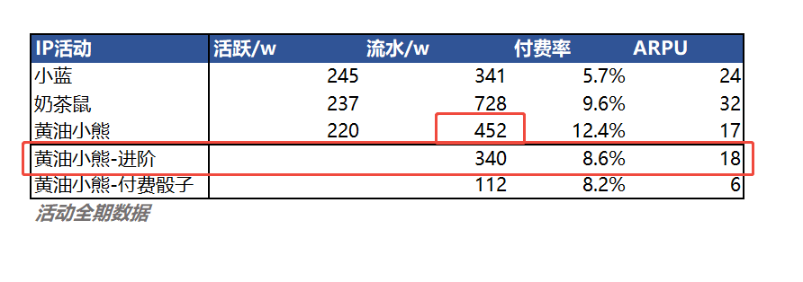
📎 原文：第六十五周周报
📌 mkk: 返钻占比仅6%，对整体心钻经济冲击极小。87%流向卡池说明"返钻→卡池消费"的路径非常通畅——进阶BP返钻本质上是一种"延迟折扣"，玩家先付钱买进阶，返的钻又花回卡池。净效果是提高了用户的总消费深度而非减少收入。
W85 抽卡券产销情况
春节期间(1.31 - 3.01) 抽卡券产销情况如下：产销比达到98.8%，玩家春节期间获得的抽卡券基本消耗完全。目前存量和春节前基本持平，因此对后续卡池/商业化活动应该影响较小。
分卡池消耗情况：消耗抽卡券的主力还是森铃咒语大卡池，占比83%。
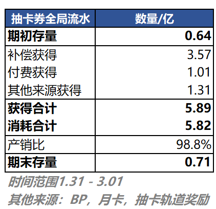
📎 原文：第八十五周周报
📌 mkk: 98.8%的产销比是非常健康的信号——春节期间送出的抽卡券几乎全部被消化，不会像蓝钻那样形成持续贬值的货币泡沫。森铃大卡池吸收了83%的消耗，再次证明大卡池是最有效的消耗出口。更重要的是"存量与春节前持平"，意味着后续卡池的付费不会被春节剩余券稀释——这与W83-84喜羊羊通票影响形成对比。